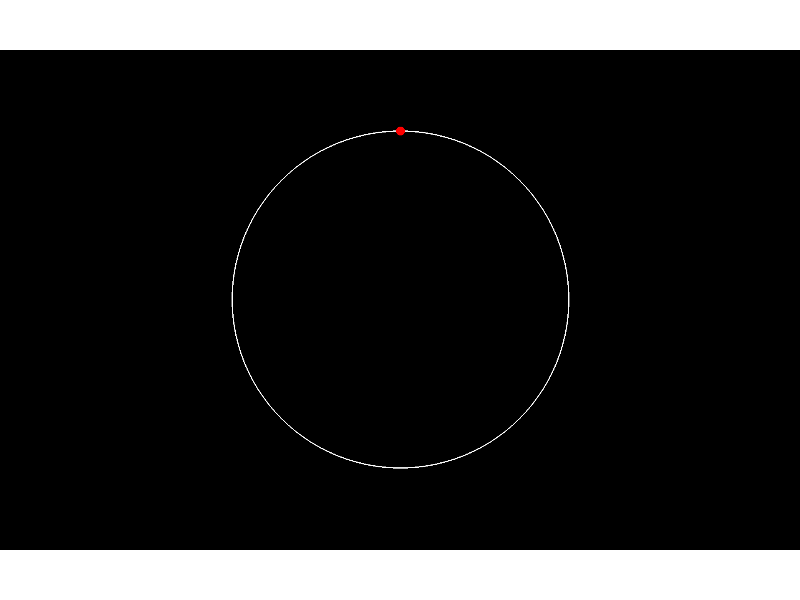

Integration with Eyelink functionality makes programming experiments using eye-tracking simpler.
Script output:
2015-05-18 11:21:17,106 - INFO - Expyfun: Setting up Pyglet audio
2015-05-18 11:21:17,149 - INFO - Expyfun: Setting up screen
2015-05-18 11:21:17,404 - EXP - Expyfun: Set screen visibility True
2015-05-18 11:21:17,443 - INFO - Expyfun: Initializing dummy triggering mode
2015-05-18 11:21:17,447 - INFO - Expyfun: Initialization complete
2015-05-18 11:21:17,447 - EXP - Expyfun: Subject: foo
2015-05-18 11:21:17,447 - EXP - Expyfun: Session: 001
2015-05-18 11:21:17,447 - INFO - EyeLink: Initializing on None
2015-05-18 11:21:17,448 - INFO - Eyelink: Running experiment on a version Dummy tracker.
2015-05-18 11:21:19,789 - INFO - Eyelink: Stopping recording
2015-05-18 11:21:19,789 - INFO - Eyelink: Closing file
2015-05-18 11:21:19,789 - INFO - Eyelink: Opening remote file with filename 112119
2015-05-18 11:21:20,139 - INFO - EyeLink: Entering calibration
2015-05-18 11:21:20,172 - INFO - EyeLink: Completed calibration
2015-05-18 11:21:21,022 - EXP - Expyfun: Stamp trial ID to el_id : [0]
2015-05-18 11:21:21,023 - EXP - Expyfun: Stamp trial ID to ec_id : Circle
2015-05-18 11:21:21,023 - EXP - Expyfun: Stamp trial ID to ttl_id : [0]
2015-05-18 11:21:21,052 - EXP - Expyfun: Starting stimuli: flipping screen and playing audio
2015-05-18 11:21:26,392 - INFO - Eyelink: Stopping recording
2015-05-18 11:21:26,392 - INFO - Eyelink: Closing file
...
Python source code: eyetracking_experiment.py
# Author: Eric Larson <larsoner@uw.edu>
#
# License: BSD (3-clause)
import numpy as np
import matplotlib.pyplot as plt
from expyfun import ExperimentController, EyelinkController, visual
import expyfun.analyze as ea
print(__doc__)
with ExperimentController('testExp', full_screen=True, participant='foo',
session='001', output_dir=None) as ec:
el = EyelinkController(ec)
ec.screen_prompt('Welcome to the experiment!\n\nFirst, we will '
'perform a screen calibration.\n\nPress a button '
'to continue.')
el.calibrate() # by default this starts recording EyeLink data
ec.screen_prompt('Excellent! Now, follow the red circle around the edge '
'of the big white circle.\n\nPress a button to '
'continue')
# make some circles to be drawn
radius = 7.5 # degrees
targ_rad = 0.2 # degrees
theta = np.linspace(np.pi / 2., 2.5 * np.pi, 200)
x_pos, y_pos = radius * np.cos(theta), radius * np.sin(theta)
big_circ = visual.Circle(ec, radius, (0, 0), units='deg',
fill_color=None, line_color='white',
line_width=3.0)
targ_circ = visual.Circle(ec, targ_rad, (x_pos[0], y_pos[0]),
units='deg', fill_color='red')
fix_pos = (x_pos[0], y_pos[0])
# start out by waiting for a 1 sec fixation at the start
big_circ.draw()
targ_circ.draw()
screenshot = ec.screenshot()
ec.identify_trial(ec_id='Circle', ttl_id=[0], el_id=[0])
ec.start_stimulus() # automatically stamps to EL
if not el.wait_for_fix(fix_pos, 1., max_wait=5., units='deg'):
print('Initial fixation failed')
for ii, (x, y) in enumerate(zip(x_pos[1:], y_pos[1:])):
targ_circ.set_pos((x, y), units='deg')
big_circ.draw()
targ_circ.draw()
ec.flip()
if not el.wait_for_fix([x, y], max_wait=5., units='deg'):
print('Fixation {0} failed'.format(ii + 1))
ec.trial_ok()
el.stop() # stop recording to save the file
ec.screen_prompt('All done!', max_wait=1.0)
# eyelink auto-closes (el.close()) because it gets registered with EC
plt.ion()
ea.plot_screen(screenshot)
Total running time of the example: 10 seconds